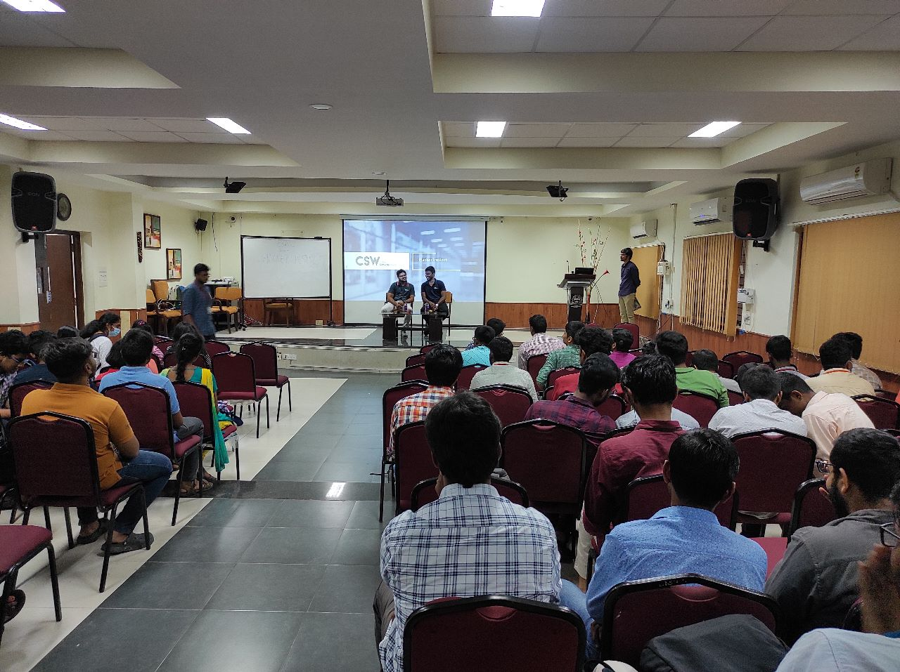

Who We Are?
Computer Society of Anna University [CSAU] is one of CEG's oldest technical clubs, functioning under Ramanujan Computing Centre [RCC]. The goal of CSAU is to extend the knowledge of computer science beyond the fields of CS and IT. In addition to helping students realize their technical interests, the club upskills them through knowledge sharing within the peer network. Our team at CSAU explores and experiments with new technologies with the goal of spreading the knowledge to the network. Bringing together peers, juniors, and alumni, we create an informative network to raise awareness about current technologies and assist in upskilling students. In order to shed light on the latest technologies, we conduct a number of events where spokespersons from various industries share their knowledge and experiences of working with those technologies. In addition to exploring new technologies, we are always looking to expand our peer network to share knowledge.
What We Do?
The Computer Society of Anna University strives to bring together students from across departments together to communally support each other’s growth in various technical domains. The club regularly meets up to conduct workshops on multiple and engages its audience through technical articles, posts, and technical trivia on social media platforms. CSAU also prides itself in having conducted bootcamps on skills that make students industry-ready such as “Data Hack” for Artificial Intelligence (AI), Web Dev Bootcamp etc. The “100 Days of Code” was one such series where competitive coding aspirants followed up on each other’s work for a duration of 100 days – thus creating a conducive learning space. The club aims to repeatedly upgrade itself with more engaging content and events that benefit the student community. CSAU thus hopes to continue nurturing a growing community of tech enthusiasts within the college.
copyright 2023 CSAU